This document explains, with examples, images, and source code snippets, how the game determines where you are on the track: lap completion, route validation, and shortcut behavior all depend on it.
Before diving in, we need to understand the tools the game uses and give each one a name. This will make it easier to follow along even in the most specific cases.
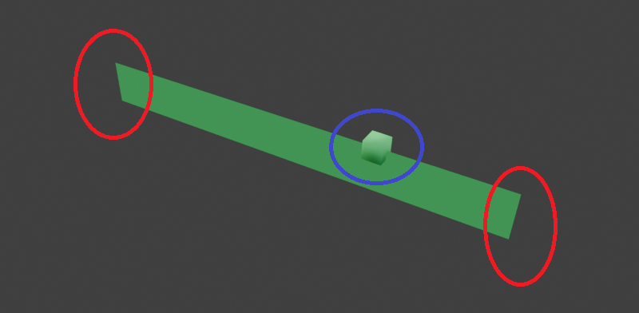
What you see in the image is an AI Node. It is the most important component to understand this document: the game does not see the layout the way we do, to it the track is just a series of segments called AI Nodes.
Here we limit ourselves to seeing what a node is. What it does will be covered later. A node has 2 endpoints (red, one on each side of the track) and 1 center (blue): they are called "node endpoint" and "node center".
Key note. The center is not at the geometric center between the two endpoints: in some cases, it is much closer to one endpoint than the other. On node 0 of track 1, it is about 120 units from one endpoint and 1250 from the other. We will see that this matters because the center is the point against which the game compares your distance.
AI Nodes are not all the same. In addition to size and orientation, each node has a number from 0 to 10 called priority. In the export script, each priority corresponds to a color. Almost all of them regulate CPU car choices, but some also affect the player.
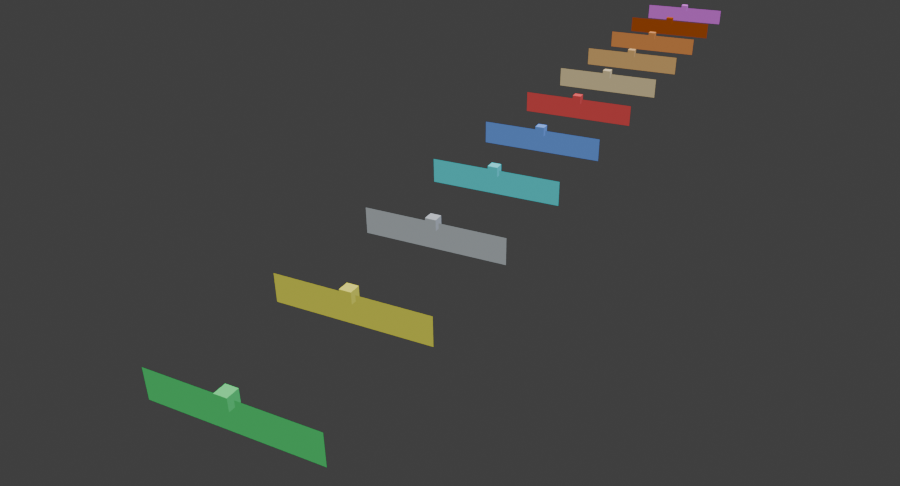
| Priority | Color | Name | What it does | Who it affects |
|---|---|---|---|---|
| 0 | green | Standard | The most common type, with no special functions. | |
| 1 | yellow | Weapon branch | Alternative route tied to power-ups: CPUs that already have a weapon avoid this branch. | CPU |
| 2 | gray | Unknown | In the analyzed code, I couldn't find what it does. To be verified. | ? |
| 3 | turquoise | Recovery branch | Taken only by CPU cars in the lower half of the standings. | CPU |
| 4 | blue | Shortcut / cups | Choice depends on standings and cup difficulty. In high-level cups, all CPUs take it. | CPU |
| 5 | red | CPU ban | The CPU always avoids this branch. | CPU |
| 6 – 9 | orange → brown | Throttle limit | Limits CPU gas to a fixed percentage: 75% (6), 50% (7), 25% (8), 12% (9). | CPU |
| 10 | purple | Special checkpoint | Passing through it turns on the flag that allows laps to be counted (section 7). In tracks checked so far (such as track 1 and 14), there are no nodes of this type. | player |
To be verified. Colors and names are from our export. "CPU ban" (priority 5) suggests a shortcut meant for the player, but from the code, we only know that the CPU does not take it. On track 1 there are nodes 0, 2, 5, 6, and 7, and no node 10.
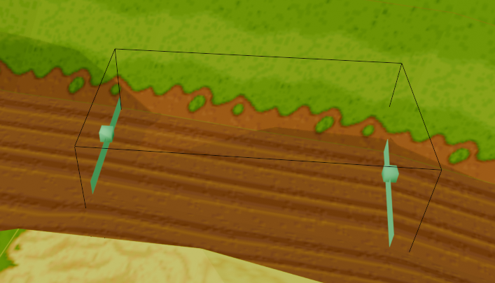
Beyond the shape we saw, each node has a zone: a space of relevance. It is a three-dimensional box, constructed as follows:
Only the car's center matters: if it is inside the box, you are "in the zone". Being exactly on the border does not count (in local search).
The zones overlap quite a bit, especially in areas with obstacles in the middle of the track. At any given moment, you can be inside multiple zones simultaneously.
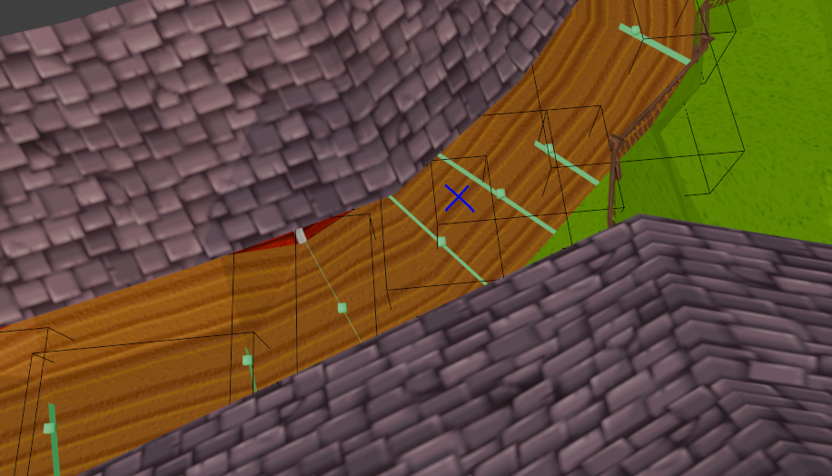
Key note. In this section, we only describe what a zone looks like. How the game uses it to decide where you are is the topic of section 3.
pCurNode) and Local SearchAt each update, the car is associated with a node via a pointer called pCurNode. It is the link between the vehicle and the logical structure of the track, and it is what the game uses for:
For the player, the current node is recalculated every time PlayerControl runs (the function governing the player's car), which the game reschedules every 0x14 time units (the exact unit has not been verified). The method is local search: the game does not look at the entire track, but only at the nodes around the last known node.
The set of nodes the game checks is called the search window. The scan is performed by two recursive functions: AINodeBackTrackRecursive for previous nodes and AINodeForwardTrackRecursive for subsequent ones. For the player, the window is as follows:
| Who | Backward | Forward | Forks |
|---|---|---|---|
| Player | 7 nodes | 15 nodes | examines both branches |
| CPU | 7 nodes | 8 nodes | only the chosen branch |
That's 23 nodes (1 current, 7 backward, and 15 forward) on a stretch without forks or reconvergences. At forks, the window counts steps along each branch: you can examine more nodes in total, but always within 7 steps backward and 15 forward on each.
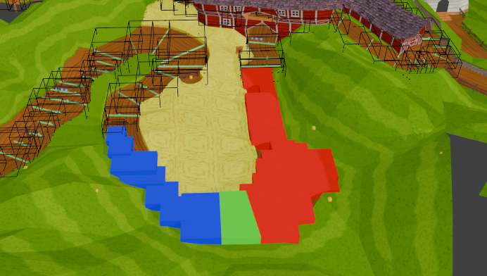
Why "7 and 15" instead of "8 and 16". In the code, the numbers are 8 and 0x10 (16), but each recursive call consumes one before checking. BackTrack(node, 8) goes back 7 steps and from there checks 16 nodes forward (from −7 to +8). ForwardTrack(node, 16) goes forward 15 steps and from there checks 16 nodes backward (from +15 to 0). The union is from −7 to +15. If we also count the current node, the last useful zone ahead is the sixteenth: the starting one plus 15.
// AINodeUpdateCurrent (AINODE.c), player branch
psVar4->iRange = 0x10;
AINodeBackTrackRecursive(pCurNode, 8); // from -7 to +8
psVar4->iRange = 0x10;
AINodeForwardTrackRecursive(pCurNode, 0x10); // from 0 to +15The proof. I reproduced the three functions line by line and counted the nodes actually examined: on a stretch without forks or reconvergences, they turn out to be exactly from −7 to +15, with no gaps, 23 in total.
Watch out for reconvergences. The count "−7 and +15, 23 nodes" only applies where the track is a simple chain. Where two roads rejoin (a node with two predecessors), the backward part of the search also enters the other road, and nodes that are not "just behind" you but on another road end up in the window. Example, track 14, node 225: in steps 0 to +4, nodes 203–207 also appear, from a parallel road between about 430 and 900 units lower, which reconverges at node 208. The window is therefore a list of candidates: the ones that actually matter are only those whose zone contains the car (section 2, with the ±400 height band), and the lower road is mostly discarded. The height comparison uses the node center, so it is approximated.
If the car is inside multiple zones of the window, the game calculates the distance (in 3D space) between the car and the center of each candidate node. The new pCurNode is the one with the closest center. In case of a tie, the first one found wins.
Therefore: the node whose zone "contains you best" does not matter; the closest center does. This is why a mispositioned center (see the note in section 1) genuinely changes which node is assigned to you.
The window determines how much the game tolerates cuts and jumps. What matters is where you land relative to the node you had before the jump:
pCurNode updates and the game accepts the movement as if you had driven.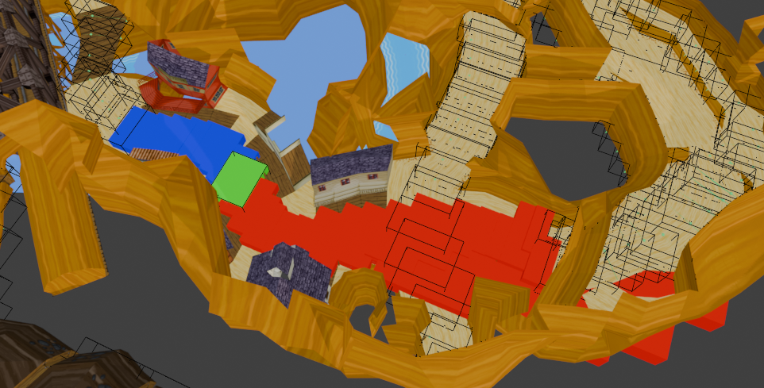
Calamity Canyon shows the geometric limit of the window. The route passes through the same intersection twice, but the nodes of the two passes are far apart in the chain. Anyone taking the wrong branch finds the next stretch too far ahead, beyond the window: the alternative area is outside local search, so you cannot "grab" the distant stretch.
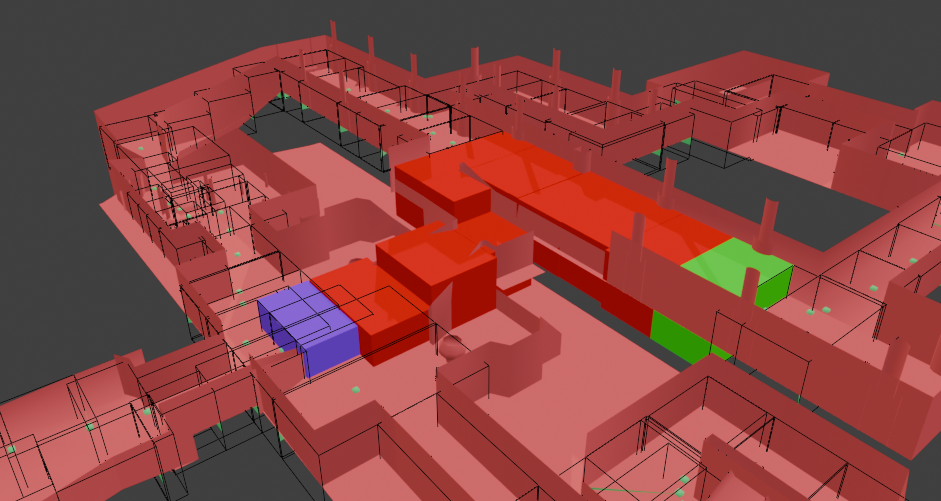
This is cocodoggo's record skip on this track. Upon landing, the car hooks the sixteenth zone (start + 15), the last useful one, in purple. There is no margin: with even a single extra zone in the cut stretch, local search would not have seen the landing.
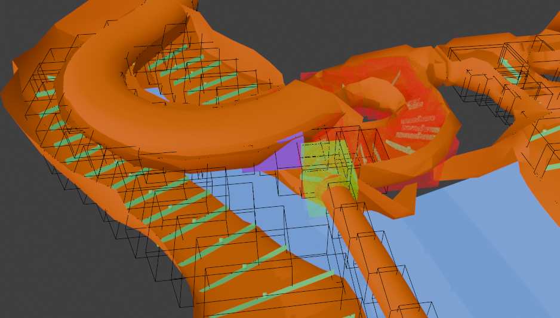
From SteveNerd's record, on a shortcut discovered by cocodoggo. The stretch has so many overlapping zones that semitransparent volumes are needed to read it. From the takeoff point to the landing, there are exactly 16 zones: with one more zone, the skip would be outside the window.
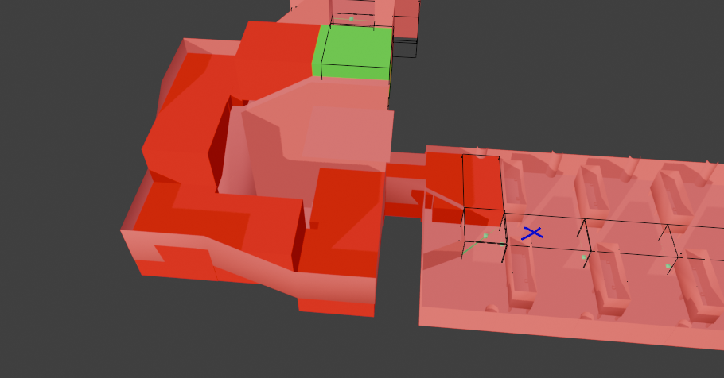
Another discovery by cocodoggo: what happens when the skip exceeds the threshold. The car lands just past the sixteenth zone (blue X), right in front of the last red zone. A fraction further back and it would have been hooked; instead, local search fails.
In a race, the player doesn't see where zone coverage ends: instead of pushing the margin, they perform a longer reversing maneuver in an area devoid of nodes until they re-hook a valid point.
To remember. The examples should be re-read after section 6: that's where we discover the window isn't the only check.
So far we've seen where you are (the node). However, the game also wants to know how much distance remains for you, because it derives laps and standings from this number. To do this, every node carries a value.
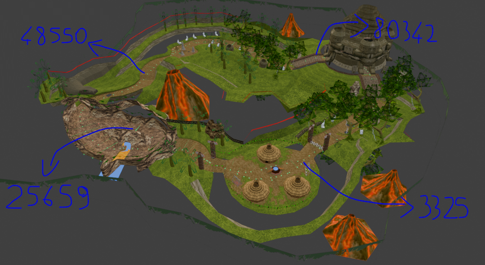
Each node contains a number called iFinishDist: the distance remaining from that node to the finish line, following the chain. The finish line node has 0, the one immediately before has a small value, distant ones have large values. The sum for the entire lap is called nodeTotalDist; for example, on track 1 it is 131008.
Two important consequences:
The node itself doesn't tell you your exact position: it only knows its center. To correct this, the game measures how far ahead you are relative to that center, along the node's travel direction.
svForwardDir). At forks (a node with two successors), it is the average of the two directions, which is not normalized to length 1. How the stored direction is calculated has not been verified.iFinishDist to get a more precise value than just the node's distance.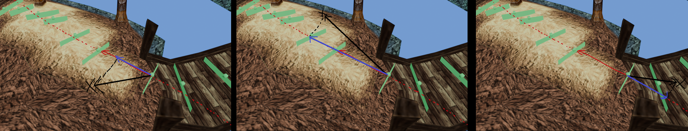
The car's distance from the finish line is therefore:
progress = dot_product(car_pos - node_center, node_direction) // AINodeDistanceAlong
final_distance = node.iFinishDist - progress // AINodeUpdateFinishDistance
if final_distance < 0: final_distance += nodeTotalDist // you are past the finish line: new lapLimits. In AINodeDistanceAlong and AINodeUpdateFinishDistance there is no cap on progress: the value is subtracted as-is. The calculation is in 3D (height also counts, so climbs and descents matter), the car position is the physical position divided by 256, and the difference from the node center is kept in a 16-bit signed integer. Progress remains small only because normally the current node is the one whose zone contains the car. If the car leaves every zone and the old node remains (section 6.2), progress can become very large.
Hypothesis. The dot product result comes from the PS2 graphics processor (GTE) in fixed-point, and the exact scale is not verified: I assume it matches the position units. I don't know if the result is divided by 4096 (the fixed-point direction has length 4096), nor if GTE functions limit it to 16 bits. PS2C_SetGteMatrixForDotProduct, PS2C_GteMatrixMulVec16, and PS2C_GetDotProductResult would be needed. The idea (progress along the direction) is certain, the numerical factor is not.
From this, the game derives two numbers, updated at every update:
iFinishDist (of the car): how much distance is left to finish the lap;iTotalRacedDist: how much distance you have traveled in the entire race. It is (nodeTotalDist − final_distance) + completed_laps × nodeTotalDist, plus a term compensating for backward crossings of the finish line (section 7).To be verified. I haven't seen yet where the game uses iTotalRacedDist: by name it's the natural candidate for sorting the standings, but I'm writing this as a hypothesis.
In sections 3 and 4, we said that if you land beyond the window, the game doesn't see you anymore and the node stays the old one. That was a simplification. The game has a second check, which is not local: it looks at the entire track, and it uses the finish line distance we just saw.
For the player, when the window finds no nodes, the game calls AINodeNearestInRange. It works like this:
iFinishDist value of the node you had before (pPrevValidNode, a copy of the last current node).iFinishDist differs from it by less than 11000 units, forward or backward.Key difference. The window counts how many nodes separate you from the starting node. The distance search counts how many distance units. They are not the same thing: if nodes are sparse (far apart), 11000 units are worth fewer than 15 nodes. If they are dense, they are worth more. On track 1, with nodes averaging about 900 units apart, 11000 units are roughly 12 nodes.
If even the distance search finds no node, the game tries AINodeInAnyNode: it checks if the car is inside the zone of any node. If so, it increments the iGettingLost counter (indicating you are "lost", meaning on a track zone but far from your node) and clears the wrong-way flag, but it does not reassign you to that node. If none of the three attempts yields a node, pCurNode reverts to pPrevValidNode: you remain tied to the old node.
| Step | What it checks | If a node is found |
|---|---|---|
| 1 | Window: from −7 to +15 nodes | Assigns you the node with the closest center. |
| 2 | All nodes with iFinishDist within 11000 of the starting node | Assigns you the node with the closest center. |
| 3 | All nodes, to see if you are anywhere on the track | Does not reassign. Increments iGettingLost. |
| 4 | Nothing found | You stay on the old node. |
A detail to verify. From reading the code, the difference in iFinishDist is calculated without considering that distance is circular (after the finish line it resets to zero). If so, near the finish line the distance search does not "see" nodes on the other side of the line. This needs to be checked in AINodeNearestInRange's code.
This potentially changes the interpretation of the examples in section 4. A landing beyond the sixteenth zone is not necessarily lost: it is re-hooked by the distance search if the landing node has an iFinishDist within 11000 of the starting one and its zone contains the car.
iFinishDist: the difference should be much greater than 11000. In that case, both the window and the distance search exclude them, which is what prevents the skip.iFinishDist value relative to the starting one.Not yet verified. To know what actually happens in each example, we need to compare the iFinishDist values of the starting and landing nodes. Until we do, the conclusions on examples 1 and 4 are hypotheses.
There is a checkered stripe on the track, but the game doesn't care. There is no collision sensor on the line. To the game, a lap is a number: your distance to the finish line (the car's iFinishDist), which decreases as you advance. When you reach 0 and pass the center of the finish line node, the number jumps from nearly zero to nearly the full lap length. That jump is the game's "finish line".
At each update, the game compares the new distance with the previous update's distance. The "previous" one isn't derived from anything special: it's the value the game calculated and saved in the car at the previous update, which it overwrites right after the checks.
| What happens to the distance | Threshold (track 1) | What it means |
|---|---|---|
Jumps up abruptly by more than nodeTotalDist − 6000 | over 125008 | You crossed the finish line forward. The lap counts only if the flag is on. |
Drops abruptly by more than nodeTotalDist − 4500 | over 126508 | You crossed the finish line backward (you went back before the line). |
| Any other change | Normal driving: no lap. This also includes jumps bringing you past the line while covering too much distance (more than 6000 units forward, more than 4500 backward). |
Note that the thresholds look at the jump of the number, not what you did with the car. The game doesn't know if you actually passed the line: it only knows that your distance jumped from nearly 0 to nearly the full lap length.
They are not jumps you have to make: they are margins. The number's jump is nearly a full lap, and the distance you actually traveled between the two updates is the difference:
distance_traveled = nodeTotalDist - number_jumpExample on track 1 (nodeTotalDist = 131008): before you were 50 away, now 130900 are left. The number jumped by 130850, which is more than 125008, so the finish line is recognized. The distance traveled between the two updates is 131008 − 130850 = 158 units, less than 6000.
In other words: the forward finish line is recognized only if between the two updates you traveled less than 6000 distance units across the line (less than 4500 backward). If you travel more—for example, with a skip that carries you past the line—neither the forward nor the backward branch triggers: the lap doesn't count, and since the saved distance is updated anyway, there is no second try.
To be verified. I don't know how much distance is actually traveled between two updates during a race: it depends on the time unit (0x14) and the progress scale (section 5.2).
If the jump alone were enough, you could pass back and forth across the line and count laps on every pass. To prevent this, there is an internal flag, iHalfLapDone ("half lap done"). The lap is counted only if this flag is turned on, and as soon as the lap is counted, the flag turns off.
The flag turns on in two ways:
Watch the name. The flag is called "half lap", but under the distance rule it turns on when less than a quarter of a lap remains to the line: the last quarter, not the half. The name is just what whoever wrote the code chose.
On track 1 there are no priority 10 nodes, so only the distance rule counts there. One consequence: because the check looks at the previous update, a direct jump from more than half a lap to less than a quarter completely skips the check and leaves the flag off (unless passing through a priority 10 node).
iLineClockOver to −1, a factor used to keep the total distance traveled accurate. When you then return forward, the value goes back to 0, and the lap counts again only if the flag is on. You do not accumulate forward and backward laps.AIControl) and the final time is recorded.Only for players, the game also measures how much you are heading in the wrong direction. If the car moves in the direction it is facing and the distance to the finish line increases by 1–499 units between two updates, the iGettingWrongWay counter grows by that amount (maximum 1500). In all other cases, it drops by 20 per update down to zero.
To be verified. This is only the counter. What threshold triggers the wrong-way warning is not in these functions.
To be verified. These consequences come from reading the code and I haven't tested them in-game.